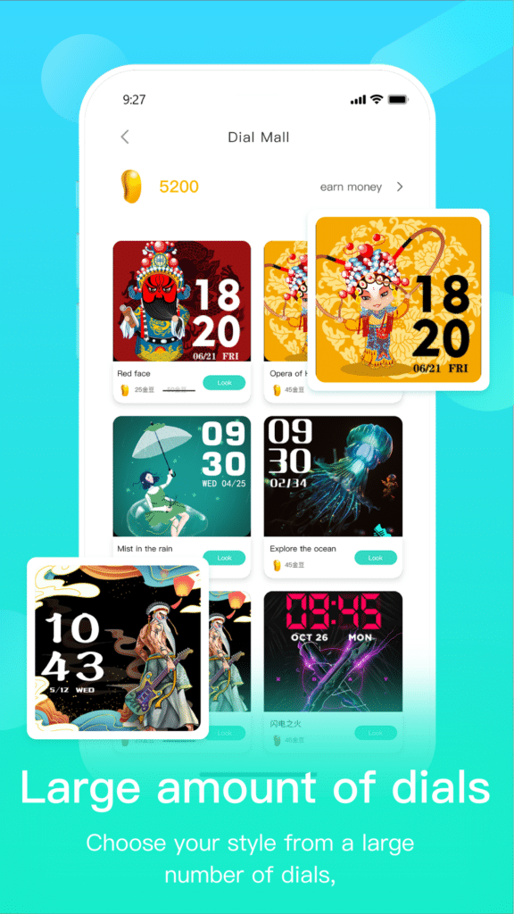

HryFine 拆解：为什么这块百元智能手表能把功能塞得这么满
从 BLE 带宽预算到 PPG 传感器的物理极限，从 Android 权限沙箱到表盘渲染管线——这篇把 HryFine 背后的设计取舍一层层拆开，看看它在成本、体验、兼容性之间是怎么算账的。
第一次在hryfine官网看到这款手表的参数时，我的反应和大多数人一样：百元价位能塞这么多功能？心率、血压、血氧、睡眠监测、运动追踪、蓝牙拍照、音乐控制、DIY 表盘……光是功能清单列出来就够写半页。App 安装包从下载拿，Google Play 和 App Store 也有上架。但真正用起来之后，一些反直觉的限制会冒出来——比如 DIY 表盘不能换字体，蓝牙拍照必须让 App 在前台亮屏，血压测量误差还挺大。
这些限制不是偷懒，而是一连串设计取舍的结果。我花了一段时间把它的几条核心功能链拆了一遍，发现每一个"为什么这样"背后都是一张预算表：BLE 带宽、传感器成本、Android 权限沙箱、表盘渲染管线。
BLE 带宽预算：为什么表盘模板不能随便改
先说 DIY 表盘。HryFine 允许你选一张底图、叠加时间/日期/步数/心率/电量这几个组件，但字体固定、颜色固定、没有模拟指针模式。用户评论里吐槽这一点的人不少——"好不容易能自己做表盘，怎么自由度砍了一半？"
这不是产品经理拍脑袋做的决策，而是 BLE 4.0 的物理限制掐死了这条路。蓝牙低功耗模式下，手表和手机之间的有效通信带宽大约在 10KB/s 量级——听起来不算太小，但要知道手表端的 MCU 内存通常只有几十 KB，表盘资源的上传和存储都在跟别的功能抢这同一条通道。
HryFine 的表盘渲染管线是这样的：手机端 App 把底图和组件配置编译成一张完整的位图，通过 BLE 推送到手表，手表直接显示这张图——没有实时渲染的能力。如果允许自定义字体，意味着每换一种字体就要把字体文件推到手表端；如果允许组件颜色自定义，意味着每次改颜色都要重新编译整张图再推一遍。考虑到 BLE 连接的不稳定性（比如信号弱、手机蓝牙被其他设备抢占），每多一项可配置项，推送失败和显示异常的概率就会上升一档。
固定字体和固定颜色的本质是把渲染复杂度提前到手机端消化，手表端只做"接收位图→显示"这一件事。这是一种典型的"胖客户端"思路——计算重活让手机做，手表只做最后一公里的显示。代价就是用户能调的参数被砍到了最小集合，但好处是推送成功率高、手表端内存占用小、固件逻辑简单。
对比一下表盘商城和 DIY 的差异就能看明白：商城模板是预编译好的，下载速度略慢（要拉模板资源）但稳定性更高；DIY 表盘只需要传底图和几个组件的位置坐标，数据量更小、推送更快。两条路的数据量和渲染负担的设计逻辑是一致的——都在省 BLE 带宽。
PPG 传感器的物理极限：为什么血压测不准
再看健康监测那条线。HryFine 的心率、血压、血氧都靠同一种传感器——PPG 光电容积法，原理是用绿光照射手腕皮肤，通过光电二极管接收反射光的信号变化来计算。心率测的是信号的周期性波动，血氧测的是血红蛋白对不同波长光的吸收率差异，血压则是从脉搏波的传播速度反推的。
问题出在血压这一环。医院里用的袖带式血压计是直接测血管壁的物理压力，而 PPG 是间接推断——它从脉搏波的时间特征（比如波峰到波谷的时长）去估算血压值。这个推断过程的误差天然就在 ±15 mmHg 以上，HryFine 的说明书里也诚实地标注了"非医疗设备"。
为什么不直接用更准的传感器？因为成本。医疗级的压力传感器成本是 PPG 模块的几十倍，而且需要袖带式的机械结构——这和智能手表的便携性完全矛盾。PPG 模块现在已经是量产成本最低、体积最小、功耗最低的健康监测方案了，也是几乎所有百元智能手表的共同选择。
那血氧呢？血氧的准确度看起来还行（说明书给出的误差范围是 ±3%），这是因为血氧的计算逻辑更直接——只需要比较红光和红外光的吸收率比值，不需要像血压那样做二次推断。心率也是同理，信号周期性很清晰，误差可以控制在 ±5 bpm。
所以 HryFine 在健康监测上的准确度差异不是厚此薄彼，而是传感器原理本身决定了哪项指标能做得准、哪项做不准。三条指标共用一颗 PPG 传感器，精度天花板在设计之初就已经焊死了。

Android 权限沙箱：为什么遥控拍照必须亮屏前台
蓝牙拍照可能是最让人困惑的功能。我专门翻了hryfine文档核对，说明书里确实用粗体强调了一个条件：手机不能锁屏，HryFine App 必须在前台。这不是 App 开发者的习惯问题，而是 Android 权限模型的刚性约束。
Android 从 10 版本开始收紧了后台启动相机和后台拉起 Activity 的权限。HryFine 的遥控拍照走的是一条比较标准但受限的路线：手表通过 BLE 发送拍照触发指令 → 手机端 App 收到指令 → App 调起系统相机 → 拍照。如果 App 在后台或者手机锁屏了，中间调起相机这一步就会被系统拦截——MIUI、ColorOS 这类国产定制 ROM 的限制比原生 Android 还严。
理论上有绕过方案，比如用无障碍服务或者虚拟快门键，但那会让 App 申请一堆敏感权限，用户安装时会被吓走，而且 Play Store 审核也过不了。HryFine 选择的是最合规但最笨的路线：直接要求用户保持 App 前台亮屏，用最低的权限成本换取功能可用。
音乐控制那条线就顺利得多——因为用的是标准 AVRCP（音频/视频远程控制协议），这是蓝牙规范里的标准指令集，所有主流音乐 App 都原生支持，不需要 App 在前台、不需要申请特殊权限，手表直接发标准指令就行。这就是为什么音乐控制的体验比拍照好那么多——一个走标准协议通道，一个要穿越 Android 的权限沙箱。
这套设计意味着什么
把这几条线放在一起看，HryFine 的设计哲学其实很清晰：在硬件成本和系统权限的约束下，用标准化协议和提前渲染来最大化功能覆盖，同时把体验上的妥协控制在用户能接受的范围内。
适合什么人？追求性价比、想要一块功能齐全的日常手表的人。如果你只是想看看步数、心率、偶尔用遥控拍个合影，HryFine 能以非常低的门槛满足这些需求。它的血压和血氧数据虽然不准，但作为日常趋势参考（比如连续一周有没有明显升高）是够的——毕竟去医院测才是正经事，手表本来就不是医疗设备。
不适合什么人？对表盘自由度有执念的玩机党、需要精准健康数据的用户、习惯深度定制手机系统的折腾党。DIY 表盘不能换字体这件事，对于想把表盘玩出花的人来说是硬伤；血压数据不准，对于需要持续监测的人来说可能会造成误判。
最后说一句——HryFine 的设计思路其实是这个价位段智能手表的缩影。BLE 带宽预算、PPG 传感器精度、Android 权限约束，这三件事几乎框死了所有百元手表的功能边界。谁能在这个框里把功能堆得更合理、把体验妥协藏得更深，谁就能赢得更多用户。从这个角度看，HryFine 做得不算差。